Laplace变换，传递函数，微分方程
Part1
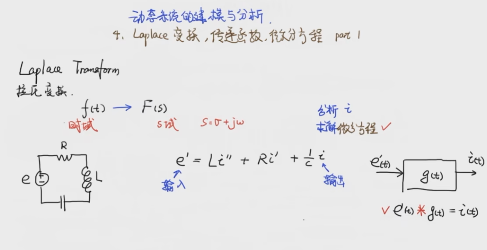- 时域到复数域
-
小于0的部分留给哲学家
-
拉普拉斯变换后变到三维空间
-
，从右边看过去，就是傅里叶变换
-
从上往下看，是复平面
- 指数函数的拉普拉斯变换
- 线性，符合叠加原理
- 利用上面两个式子
-
导数的拉普拉斯变换
-
分部积分法
-
: initial condition，往往定义为0
- 卷积的拉普拉斯变换
- 两边进行拉普拉斯变换
- 微分方程变成只有加减乘除
- 中间的框图叫传递函数
Part2 收敛域和逆变换
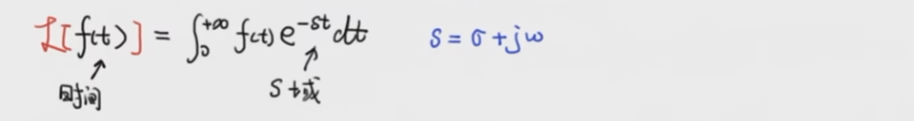
- 在复平面上运动，幅值不变，始终是1，不会对整个的收敛性造成影响
- 用拉普拉斯变换求解微分方程

- 把-4，-1叫做极点
-
-1到了 那里，2i 是振动的部分
-
微分方程的解和极点相关
Part3 传递函数 Transfer Function
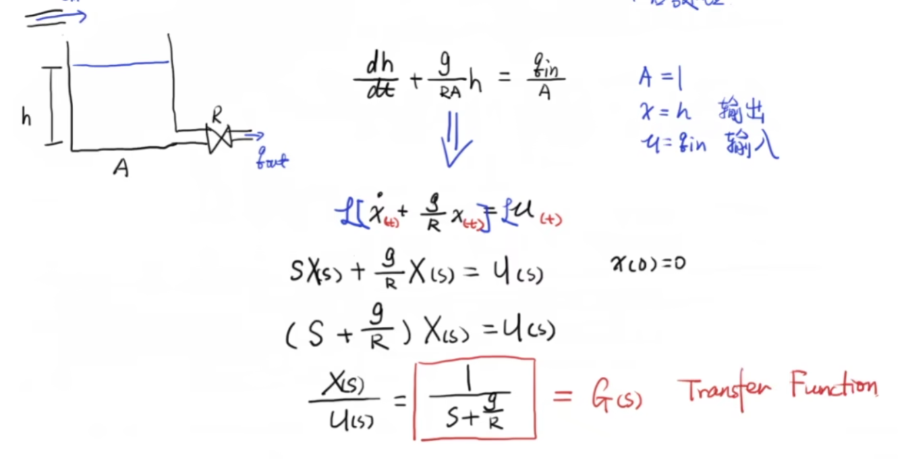 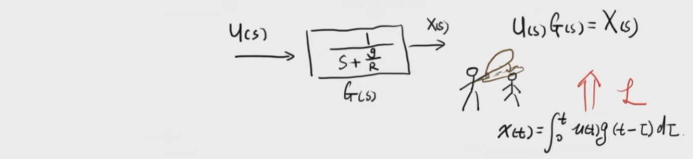- 把原来应该是卷积的关系变成乘法的关系
- 0和 还出现在 的分母部分，极点 Poles
- 通过设计不同的系统输入 ，通过 配置系统希望的极点，从而控制系统的输出
一阶系统的单位阶跃响应，时间常数
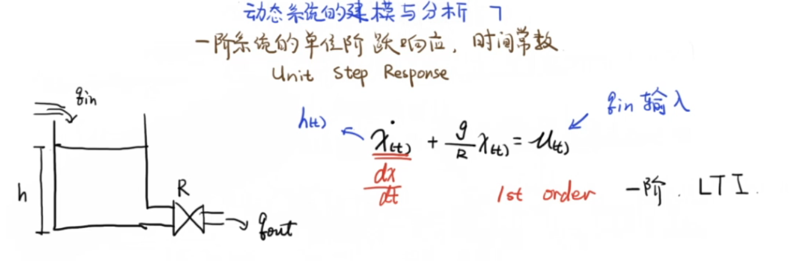 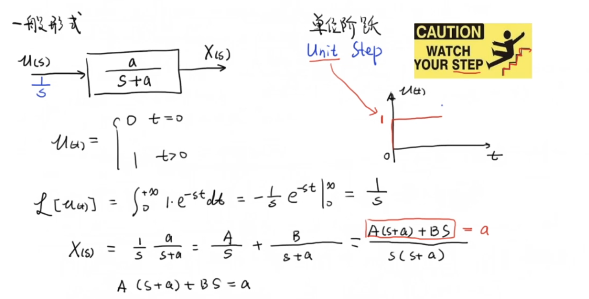 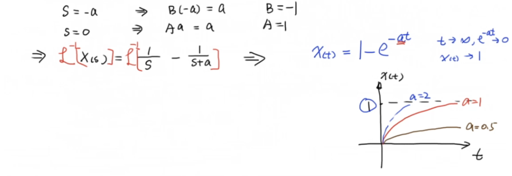 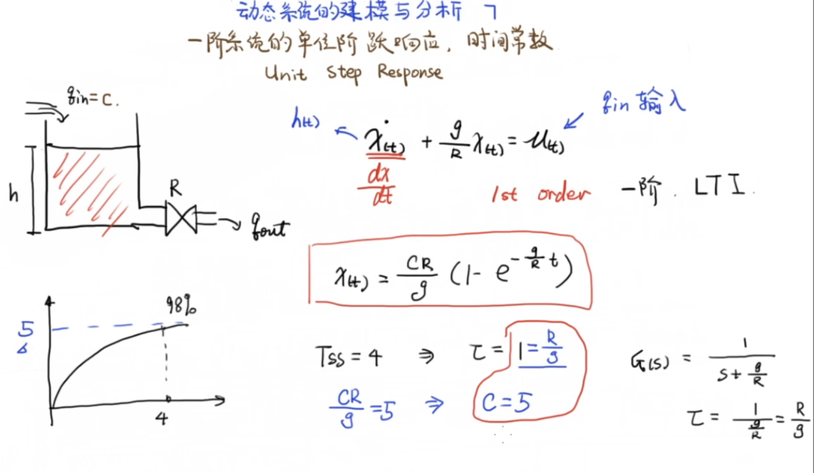
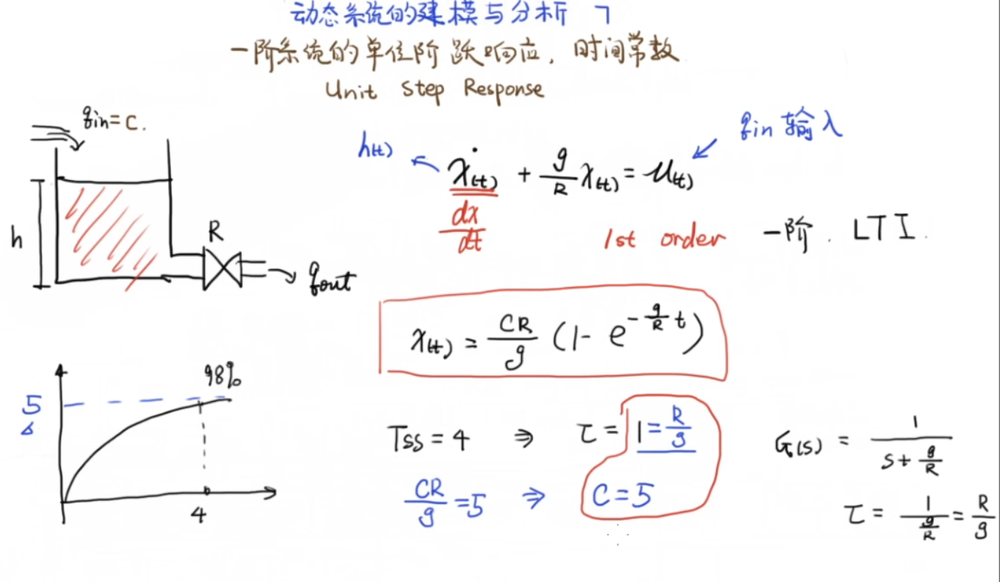
单位阶跃响应（一阶） 换一种角度
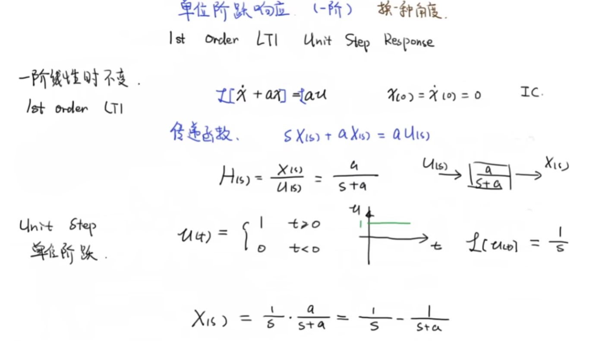 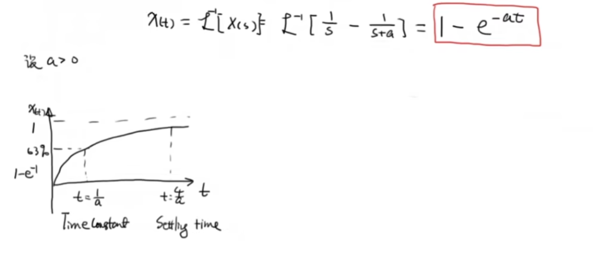 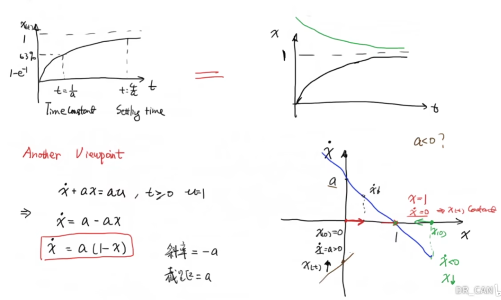- 初始等于0时，，导数大于0， 增加；增加到 ，导数等于0了，函数值 不变了，就收敛了
- 初始值大于1，导数小于0，函数值不断减小（下面那张图表示就是向左移），直到减小到1为止，导数为0
- 如果 a小于 0，就是棕色那条线
本博客所有文章除特别声明外，均采用 CC BY-NC-SA 4.0 许可协议。转载请注明来自 Seline's blog！